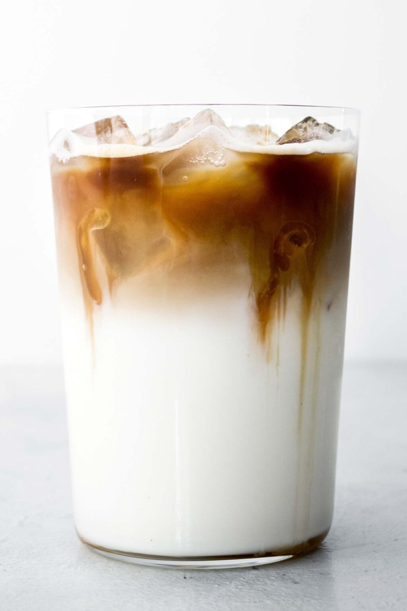

Iced Caramel Macchiato

Description
A starbucks copycat recipe to make this iced drink at home
Ingredients
- 3 tablespoons vanilla syrup
- 1 cup 2% milk
- 1 cup ice
- 2 capsules nespresso espresso (or 2 espresso shots)
- 1 tablespoon caramel sauce
Instructions
- Pour vanilla syrup, milk, then ice into a cup. Top with espresso shots.Use 2 nespresso espresso pods or 2 shots from an espresso machine
- Add caramel drizzle to the top of the drink.To add caramel just like starbucks, drizzle in crosshatch pattern, layering the caramel drizzle 7 times vertically across the surface of the drink, 7 times horizontally, then 2 circles around the edge of the cup.
source: Iced caramel macchiato